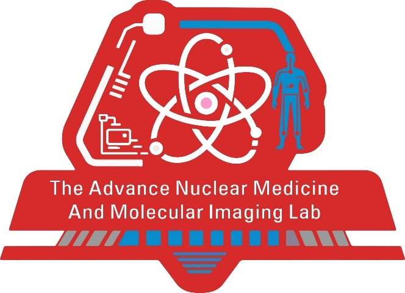
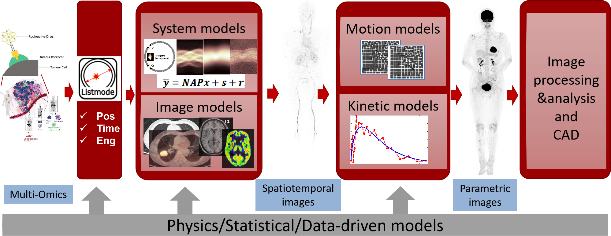

 The Advanced Nuclear Medicine and Molecular Imaging Lab

Xie, Zhaoheng（谢肇恒）
Principal Investigator/Assistant Professor (Tenure-track):
Technology, Peking University Health Science Center, Peking University
Courtesy Appointment:The National Biomedical Imaging Center (NIBC), College of Future Technology, Peking University
Email: xiezhaoheng@pku.edu.cn
I am an Assistant Professor (tenure-track) at the Institute of Medical Technology, Peking University Health Science Center, with a courtesy appointment at the National Biomedical Imaging Center, Peking University. My lab focuses on advancing molecular imaging technologies, including PET/SPECT image reconstruction algorithms, kinetic modeling, theranostics, and AI-assisted diagnostics and therapeutics.
Before joining Peking University, I was a Postdoctoral Fellow at UC Davis, where I played a pivotal role in developing two landmark PET systems: the world’s first total-body PET scanner EXPLORER (R01 CA206187, $15.5 M) and the NEUROEXPLORER brain PET system (U01 EB029811, $10.2 M) for the BRAIN Initiative. I have authored over 30 papers in top-tier SCI journals and hold 12 invention patents granted in China and the United States. Our innovations have been featured in Science, Nature News, and NIH reports, reflecting my commitment to bridging cutting-edge imaging physics with impactful translational applications.
Selected Funding & Award
- Principal Investigator of NSFC Major Project (Sub-project), 2023
- NSFC Excellent Young Scholars Fund (Overseas), 2022
- SNMMI Young Investigator Award(1st place Winners), 2020
- SNMMI Henry N. Wagner Best Paper Award, 2019
News
For recruitment information, please see: https://wiki.milab.wiki/
September 2025 – Our paper on an unsupervised neural network approach for dual-time-window PET acquisition in the Patlak plot has been accepted by EJNMMI Physics.
July 2025 – Our paper on a Modality-projection universal model for comprehensive full-body medical imaging segmentation has been accepted by Nature Communications.
June 2025 – Our study on multiorgan metabolic dysregulation in Alzheimer's disease has been accepted for presentation at European Association of Nuclear Medicine Congress 2025 (The largest international meeting in nuclear medicine).
May 2025 – Our work on multi-GPU total-body PET image reconstruction has been accepted for Oral Presentation at Fully 3D 2025 (Premier conference dedicated to 3D image reconstruction in medical imaging).
March 2025 – Our paper on brain interstitial fluid imaging has been accepted by Sensing and Imaging.
October 2024 – Our work on low-dose universal-tissue CT image domain adaptation for medical segmentation was accepted by MICCAI 2024 (Top-tier conference in medical image field).
July 2024 – Our paper introducing a novel graphical plot in dynamic PET imaging was accepted by Physics in Medicine & Biology (PMB).
June 2024 – Our work on uncertainty evaluation in dynamic PET imaging was accepted for Oral Presentation at the SNMMI Annual Meeting.
May 2024 – Our study on suppressing label noise in medical image classification was accepted by Physics in Medicine & Biology (PMB).
April 2024 – Our Prior Category Network (PCNet) for CT universal segmentation was accepted by IEEE Transactions on Medical Imaging (TMI).
April 2024 – Our paper on structure-enhanced unsupervised domain adaptation for CT whole-brain segmentation was accepted by IEEE Transactions on Radiation and Plasma Medical Sciences.
November 2023 – Invited to give a talk at the Total-body PET Workshop during IEEE NSS/MIC 2023 (The premier international conference on nuclear science and medical imaging).
November 2023 – Our study on optimizing coincidence sorting protocols for total-body PET was accepted by IEEE NSS/MIC 2023.
June 2023 – Our work on fast and robust estimation of kinetic parameters in dynamic PET imaging was accepted for Oral Presentation at the SNMMI Annual Meeting (The premier international conference in nuclear medicine and molecular imaging).
June 2022 – Our paper on a Hybrid Imaging Platform(CT/PET/FMI) for Evaluating Tumor Necrosis and Apoptosis in Real-Time has been accepted by Frontiers in Oncology. This work is a follow-up to our Journal of Nuclear Medicine paper, which reported the world’s first integrated quad-modality molecular imaging system for small animals.
Research Interests
Theranostics
PET/SPECT image reconstruction
Kinetic modeling

AI-assisted diagnostics and therapeutics
Lab Members
Faculty:
PhD:
Kunlun Xu
(田子枫)
PhD
2019 ~ 2025
Zifeng Tian
Zhao Wang
(王曌)
PhD
2023 ~ Now
Zhao Wang
Yixin Chen
(陈亦新)
PhD
2023 ~ Now
Yixin Chen
Xin Zhao
(赵鑫)
PhD
2024 ~ Now
Xin Zhao
Zhengkun Dong
(董正坤)
PhD
2024 ~ Now
Zhengkun Dong
Wenpei Jiao
(焦文沛)
PhD
2024 ~ Now
Wenpei Jiao
Ruoyan Xu
(徐若妍)
PhD
2025 ~ Now
Ruoyan Xu
Haowei Xu
(徐皓玮)
PhD
2025 ~ Now
Haowei Xu
Master:
Yang Wang
(汪洋)
Master RA
2022 ~ Now
Yang Wang
Zhengyan Deng
(邓政言)
Master
2023 ~ Now
Zhengyan Deng
Wenrui Shao
(邵闻睿)
Master
2023 ~ Now
Wenrui Shao
Kun Ma
(马琨)
Master
2024 ~ Now
Kun Ma
Yuyao Wang
(王语瑶)
Master
2025 ~ Now
Yuyao Wang
Undergraduate:
Xuan Xiao
(肖璇)
2026 ~ Now
Xuan Xiao
Zhengyan Deng
(刘圣)
Master
2023 ~ Now
Sheng Liu
Wenrui Shao
(王宇桥)
Master
2022 ~ Now
Yuqiao Wang
Kun Ma
(李丰光)
Master
2022 ~ Now
Fengguang Li
Overview:
Detailed information:
| Wang Zhao (王曌) | z.wang@stu.pku.edu.cn | 全视场高时空分辨PET图像重建 |
| Dong Zhengkun (董正坤) | dongzhengkun@stu.pku.edu.cn | 面向诊疗一体化的个体化剂量学与定量SPECT重建研究 |
| Tian Zifeng (田子枫) | tianzifeng1990@pku.edu.cn | 动态PET的图像增强与定量分析 |
| Chen Yixin (陈亦新) | yixinchen970320@126.com | 基于多模态的医学图像分割方法及应用 |
| Shao Wenrui (邵闻睿) | wenrui_shao@stu.pku.edu.cn | 基于神经网络的动态PET参数估计方法与应用研究 |
| Zhao Xin (赵鑫) | xzhao@bjmu.edu.cn | 基于Lu-176自发辐射的衰减校正方法与应用研究 |
| Jiao Wenpei (焦文沛) | jwp@stu.pku.edu.cn | 基于多模态大语言模型的PET/CT自动报告生成 |
| Ma Kun (马琨) | makun8049@163.com | 口腔癌隐匿性颈部淋巴结转移 |
| Xu Ruoyan (徐若妍) | xuruoyan@stu.pku.edu.cn | 基于多模态图像的阿尔茨海默病智能化诊断与分期分型 |
| Wang Yuyao (王语瑶) | wangyuyao0510@yeah.net | TOF-PET探测器时间分辨率优化 |
| Wang Yang (汪洋) | wang_yang@bjmu.edu.cn | 基于脑组织间液动力学的阿尔茨海默症病理机制研究 |
| Deng Zhengyan (邓政言) | 2301213591@pku.edu.cn | 基于深度学习的脑PET无CT衰减校正 |
| Xu Haowei (徐皓玮) | haoweixu@stu.pku.edu.cn | 基于科学机器学习的神经元细胞微环境仿真、控制与设计 |
Publications
(Nat. Commun.'25) - Chen, Y.†, Gao, L.†, Gao, Y., Wang, R., Lian, J., Meng, X., Duan, Y., Chai, L., Han, H., Cheng, Z.*, and Xie, Z.*, "Modality-projection universal model for comprehensive full-body medical imaging segmentation", in Nature Communications, 2025 (Accepted)
[bib] [arXiv](Sens. Imaging'25) - Wang, Y., Gao, T., Su, S., Wang, T., Zhang, S., Gao Y.*, Xie, Z.*, and Han, H.*, "Imaging Brain Interstitial Fluid", in Sensing and Imaging, vol. 26, no. 1, pp. 38, 2025
[bib] [DOI](Neural Netw.'25) - Wang, Q., Zhang, S., Zeng, D., Xie, Z., Guo, H., Zeng, T., and Fan, F. L.*, "Don’t fear peculiar activation functions: EUAF and beyond", in Neural Networks, vol. 189, pp. 107258, 2025
[bib](EANM'25) - Xu, R., Duan, Y., Gao, L., Chen, Y., Cheng, Z.*, and Xie, Z.*, "Multiorgan Metabolic Dysregulation in Alzheimer's Disease: Total-body PET/CT Reveals Systemic Network Interactions with Amyloid Burden", in Annual Congress of the European Association of Nuclear Medicine (EANM), 2025
[bib](Fully 3D'25) - Zhao, W., Zhao, X., Dong, Z., Ren, Q., and Xie, Z.*, "Load Balancing for Multi-GPU Total-Body PET Image Reconstruction", in Proc. of the 18th Intl. Meeting on Fully 3D Image Reconstruction, 2025
[bib] [news](Expert Syst. Appl.'24) - Zhang, X., Chen, Q., He, H., Zhu, L., Xie, Z., Lu, Y.*, and Cheng, F.*, "Generative learning-based lightweight MRI brain tumor segmentation with missing modalities", in Expert Systems with Applications, vol. 257, pp. 125478, 2024
[bib] [DOI](Phys. Med. Biol.'24) - Tian, Z., Zuo, Y., Xi, P., Meng, X., Shao, W., Yang, Y., Ren, Q., Yu, J.*, and Xie, Z.*, "A Novel Relative-Equilibrium Graphical Plot for Rapid Reversible Tracer Studies in Dynamic PET Imaging", in Physics in Medicine & Biology, vol. 69, no. 15, pp. 155006, 2024
[bib] [DOI] [news](IEEE Trans. Med. Imaging'24) - Chen, Y., Gao, Y., Han, H., Shao, W., Lu, Y., and Xie, Z.*, "PCNet: Prior Category Network for CT Universal Segmentation Model", in IEEE Transactions on Medical Imaging, vol. 43, no. 8, pp. 3154-3165, 2024
[bib] [DOI] [news](IEEE Trans. Radiat. Plasma Med. Sci.'24) - Chen, Y., Gao, Y., Zhu, L., Li, J., Hu, J., Han, H., Lu, Y., and Xie, Z.*, "Structure-Enhanced Unsupervised Domain Adaptation for CT Whole-Brain Segmentation", in IEEE Transactions on Radiation and Plasma Medical Sciences, 2024
[bib] [DOI](Phys. Med. Biol.'24) - Gao, M., Jiang, H., Hu, Y., Ren, Q., Xie, Z.*, and Liu, J.*, "Suppressing Label Noise in Medical Image Classification Using Mixup Attention and Self-Supervised Learning", in Physics in Medicine & Biology, vol. 69, no. 10, pp. 105004, 2024
[bib] [DOI] [news](MICCAI'24) - Chen, Y., Meng, X., Wang, Y., Zeng, S., Liu, X., and Xie, Z.*, "LUCIDA: Low-dose Universal-tissue CT Image Domain Adaptation For Medical Segmentation", in Proc. of the Intl. Conf. on Medical Image Computing and Computer-Assisted Intervention (MICCAI), 2024
[bib](J. Nucl. Med.'24) - Ma, K., Shao, W., Tian, Z., Li, N., Meng, X., and Xie, Z.*, "Advancing Uncertainty Evaluation in Dynamic PET Imaging Through Residual Permutation and Clustering Techniques", in Journal of Nuclear Medicine, vol. 65, no. supplement 2, 2024
[bib](Med. Phys.'23) - Li, T., Xie, Z., Qi, W., Asma, E., and Qi, J.*, "Unsupervised deep learning framework for data-driven gating in positron emission tomography", in Medical Physics, vol. 50, no. 10, pp. 6142-6154, 2023
[bib] [DOI](IEEE NSS/MIC'23) - Wang, Z., Tian, Z., Peng, Q., Meng, X., Yang, Z., Ren, Q., and Xie, Z.*, "Optimization of Coincidence Sorting Protocol for Total-Body PET Based on Ring and Sector Difference", in Proc. of the IEEE Nuclear Science Symposium and Medical Imaging Conference (NSS/MIC), 2023
[bib](J. Nucl. Med.'23) - Shao, W., Chen, Y., Li, N., Yang, Y., Meng, X., and Xie, Z.*, "Fast and robust estimation of kinetic parameters in dynamic PET imaging using neural network-based discretization method", in Journal of Nuclear Medicine, vol. 64, no. supplement 1, pp. 58, 2023
[bib](IEEE NSS/MIC'23) - Xie, Z., "AI in total-body PET: Reconstruction and physics correction", (Invited Talk) in Total-body PET Workshop of IEEE NSS/MIC, 2023
[bib](Front. Oncol.'22) - Kang, Y., Zhai, X., Lu, S., Vuletic, I., Wang, L., Zhou, K., Ren, Q.*, and Xie, Z.*, "A Hybrid Imaging Platform (CT/PET/FMI) for Evaluating Tumor Necrosis and Apoptosis in Real-Time", in Frontiers in Oncology, vol. 12, pp. 772392, 2022
[bib] [DOI](Med. Phys.'21) - Xie, Z., Li, T., Zhang, X., Qi, W., Asma, E., and Qi, J.*, "Anatomically aided PET image reconstruction using deep neural networks", in Medical Physics, vol. 48, no. 9, pp. 5244-5258, 2021
[bib] [DOI](Phys. Med. Biol.'21) - Lai, Y., Wang, Q., Zhou, S., Xie, Z., Qi, J., Cherry, S. R., and Du, J.*, "H2RSPET: a 0.5 mm resolution high-sensitivity small-animal PET scanner, a simulation study", in Physics in Medicine & Biology, vol. 66, no. 6, pp. 065016, 2021
[bib] [DOI](J. Nucl. Med.'21) - Zhang, X., Xie, Z., Zuo, Y., Wang, G., Shi, H., Cherry, S., Badawi, R., and Qi, J.*, "4D Total-Body PET Parametric Imaging with Cardiac Modulation", in Journal of Nuclear Medicine, vol. 62, no. supplement 1, pp. 54, 2021
[bib](Phys. Med. Biol.'20) - Xie, Z., Baikejiang, R., Li, T., Zhang, X., Gong, K., Zhang, M., Qi, W., Asma, E., and Qi, J.*, "Generative adversarial network based regularized image reconstruction for PET", in Physics in Medicine & Biology, vol. 65, no. 12, pp. 125016, 2020
[bib] [DOI](Alex. Eng. J.'20) - Yang, K., Zhai, X., Xie, Z., Zhou, K., Meng, X., Ren, Q., and Lu, Y.*, "A practical calibration criterion for image-based material decomposition in spectral computed tomography", in Alexandria Engineering Journal, vol. 59, no. 3, pp. 1371-1379, 2020
[bib] [DOI](PNAS'20) - Zhang, X., Cherry, S.R., Xie, Z., Shi, H., Badawi, R.D., and Qi, J.*, "Subsecond total-body imaging using ultrasensitive positron emission tomography", in Proceedings of the National Academy of Sciences, vol. 117, no. 5, pp. 2265-2267, 2020
[bib] [DOI](J. Nucl. Med.'20) - Zhang, X., Xie, Z., Berg, E., Judenhofer, M.S., Liu, W., Xu, T., Ding, Y., Lv, Y., Dong, Y., Deng, Z., Tang, S., Cherry, S., Badawi, R., and Qi, J.*, "Total-body dynamic reconstruction and parametric imaging on the uEXPLORER", in Journal of Nuclear Medicine, vol. 61, no. 2, pp. 285-291, 2020
[bib] [DOI](IEEE NSS/MIC'20) - Xie, Z. and Qi, J.*, "Image domain deep scatter estimation for high-temporal resolution dynamic PET", in Proc. of the IEEE Nuclear Science Symposium and Medical Imaging Conference (NSS/MIC), 2020
[bib](J. Nucl. Med.'20) - Xie, Z. and Qi, J.*, "Anatomy-guided PET image reconstruction with deep neural network", in Journal of Nuclear Medicine, vol. 61, no. supplement 1, pp. 8, 2020
[bib](J. BUON'19) - Tian, J., Zhou, K., Xie, Z., Xu, B., Tian, J., Chen, Y., Zhu, X., and Ren, Q.*, "An applicable method for PET/CT image quality assessment and comparison among three PET/CT systems with similar physical performance in cancer patients", in Journal of BUON, vol. 24, no. 6, pp. 2560-2569, 2019
[bib](IEEE NSS/MIC'19) - Xie, Z. and Qi, J.*, "Deep learning based PET image reconstruction protocol for inter-vendor scanners", in Proc. of the IEEE Nuclear Science Symposium and Medical Imaging Conference (NSS/MIC), 2019
[bib](Fully 3D'19) - Xie, Z., Baikejiang, R., Gong, K., and Qi, J.*, "Generative adversarial networks based regularized image reconstruction for PET", in Proc. of the 15th Intl. Meeting on Fully 3D Image Reconstruction, 2019
[bib](Chin. Opt. Lett.'18) - Xia, K., Zhai, X., Xie, Z., Zhou, K., Feng, Y., Zhang, G., and Li, C.*, "Dual-modal photoacoustic/CT imaging system", in Chinese Optics Letters, vol. 16, no. 12, pp. 121701, 2018
[bib] [DOI](Nucl. Instrum. Methods Phys. Res. A'18) - Xie, Z., Li, S., Zhou, K., Vuletic, I., Meng, X., Zhu, S., Xu, H., Yang, K., Xu, B., Zhang, J., and Ren, Q.*, "PKU-PET-II: A novel SiPM-based PET imaging system for small animals", in Nuclear Instruments and Methods in Physics Research Section A, vol. 877, pp. 104-111, 2018
[bib] [DOI](Gene Ther.'17) - Wang, L., Ivan, V., Xie, Z., Zhou, K., Guo, Q., and Ren, Q.*, "Bifidobacterium breve as a delivery vector of IL-24 gene therapy for head and neck squamous cell carcinoma in vivo", in Gene Therapy, vol. 24, no. 11, pp. 699-705, 2017
[bib] [DOI](JINST'17) - Li, S., Zhang, Q., Ivan, V., Xie, Z., Yang, K., and Ren, Q.*, "Monte Carlo simulation of Ray-Scan 64 PET system and performance evaluation using GATE toolkit", in Journal of Instrumentation, vol. 12, no. 02, pp. T02001, 2017
[bib] [DOI](Fully 3D'17) - Xie, Z., Zhou, K., Lu, Y., Yang, K., and Ren, Q.*, "A Novel Reconstruction Algorithm for Positron Emission Tomography Based on 3-D Data Rebinning", in Proc. of the 14th Intl. Meeting on Fully 3D Image Reconstruction, 2017
[bib](Sensors'16) - Xie, Z.#, Li, S.#, Yang, K., Xu, B., and Ren, Q.*, "Evaluation of a Wobbling Method Applied to Correcting Defective Pixels of CZT Detectors in SPECT Imaging", in Sensors, vol. 16, no. 6, pp. 772, 2016
[bib] [DOI](Chin. Phys. Lett.'16) - Li, S.#, Xie, Z.#, Huang, Z., Yang, K., Xu, B., and Ren, Q.*, "Off-axis imaging in keel-edge pinhole SPECT system based on Monte Carlo simulation", in Chinese Physics Letters, vol. 33, no. 4, pp. 048701, 2016
[bib] [DOI](Nucl. Instrum. Methods Phys. Res. A'15) - Li, S., Zhang, Q., Xie, Z., Yang, K., and Ren, Q.*, "GATE simulation of a LYSO-based SPECT imager: Validation and detector optimization", in Nuclear Instruments and Methods in Physics Research Section A, vol. 773, pp. 21-26, 2015
[bib] [DOI](WMIC'14) - Xie, Z., Zhou, K., Li, S., Yang, K., and Ren, Q.*, "An integrated Quad-Modality Molecular Imaging System for Small Animals", in Proc. of the World Molecular Imaging Congress (WMIC), 2014
[bib](Semicond. Optoelectron.'13) - Zhang, Q., Lu, Y., Xie, Z., Yang, K., and Ren, Q.*, "Progress in the development of CdZnTe unipolar sensing detector for medical imaging", in Semiconductor Optoelectronics, vol. 34, no. 2, pp. 171-179, 2013
[bib]
(Nat. Commun.'25) - Chen, Y.†, Gao, L.†, Gao, Y., Wang, R., Lian, J., Meng, X., Duan, Y., Chai, L., Han, H., Cheng, Z.*, and Xie, Z.*, "Modality-projection universal model for comprehensive full-body medical imaging segmentation", in Nature Communications, 2025 (Accepted)
[bib] [arXiv](Sens. Imaging'25) - Wang, Y., Gao, T., Su, S., Wang, T., Zhang, S., Gao Y.*, Xie, Z.*, and Han, H.*, "Imaging Brain Interstitial Fluid", in Sensing and Imaging, vol. 26, no. 1, pp. 38, 2025
[bib] [DOI](Neural Netw.'25) - Wang, Q., Zhang, S., Zeng, D., Xie, Z., Guo, H., Zeng, T., and Fan, F. L.*, "Don’t fear peculiar activation functions: EUAF and beyond", in Neural Networks, vol. 189, pp. 107258, 2025
[bib](EANM'25) - Xu, R., Duan, Y., Gao, L., Chen, Y., Cheng, Z.*, and Xie, Z.*, "Multiorgan Metabolic Dysregulation in Alzheimer's Disease: Total-body PET/CT Reveals Systemic Network Interactions with Amyloid Burden", in Annual Congress of the European Association of Nuclear Medicine (EANM), 2025
[bib](Fully 3D'25) - Zhao, W., Zhao, X., Dong, Z., Ren, Q., and Xie, Z.*, "Load Balancing for Multi-GPU Total-Body PET Image Reconstruction", in Proc. of the 18th Intl. Meeting on Fully 3D Image Reconstruction, 2025
[bib] [news]
(Expert Syst. Appl.'24) - Zhang, X., Chen, Q., He, H., Zhu, L., Xie, Z., Lu, Y.*, and Cheng, F.*, "Generative learning-based lightweight MRI brain tumor segmentation with missing modalities", in Expert Systems with Applications, vol. 257, pp. 125478, 2024
[bib] [DOI](Phys. Med. Biol.'24) - Tian, Z., Zuo, Y., Xi, P., Meng, X., Shao, W., Yang, Y., Ren, Q., Yu, J.*, and Xie, Z.*, "A Novel Relative-Equilibrium Graphical Plot for Rapid Reversible Tracer Studies in Dynamic PET Imaging", in Physics in Medicine & Biology, vol. 69, no. 15, pp. 155006, 2024
[bib] [DOI] [news](IEEE Trans. Med. Imaging'24) - Chen, Y., Gao, Y., Han, H., Shao, W., Lu, Y., and Xie, Z.*, "PCNet: Prior Category Network for CT Universal Segmentation Model", in IEEE Transactions on Medical Imaging, vol. 43, no. 8, pp. 3154-3165, 2024
[bib] [DOI] [news](IEEE Trans. Radiat. Plasma Med. Sci.'24) - Chen, Y., Gao, Y., Zhu, L., Li, J., Hu, J., Han, H., Lu, Y., and Xie, Z.*, "Structure-Enhanced Unsupervised Domain Adaptation for CT Whole-Brain Segmentation", in IEEE Transactions on Radiation and Plasma Medical Sciences, 2024
[bib] [DOI](Phys. Med. Biol.'24) - Gao, M., Jiang, H., Hu, Y., Ren, Q., Xie, Z.*, and Liu, J.*, "Suppressing Label Noise in Medical Image Classification Using Mixup Attention and Self-Supervised Learning", in Physics in Medicine & Biology, vol. 69, no. 10, pp. 105004, 2024
[bib] [DOI] [news](MICCAI'24) - Chen, Y., Meng, X., Wang, Y., Zeng, S., Liu, X., and Xie, Z.*, "LUCIDA: Low-dose Universal-tissue CT Image Domain Adaptation For Medical Segmentation", in Proc. of the Intl. Conf. on Medical Image Computing and Computer-Assisted Intervention (MICCAI), 2024
[bib](J. Nucl. Med.'24) - Ma, K., Shao, W., Tian, Z., Li, N., Meng, X., and Xie, Z.*, "Advancing Uncertainty Evaluation in Dynamic PET Imaging Through Residual Permutation and Clustering Techniques", in Journal of Nuclear Medicine, vol. 65, no. supplement 2, 2024
[bib]
(Med. Phys.'23) - Li, T., Xie, Z., Qi, W., Asma, E., and Qi, J.*, "Unsupervised deep learning framework for data-driven gating in positron emission tomography", in Medical Physics, vol. 50, no. 10, pp. 6142-6154, 2023
[bib] [DOI](IEEE NSS/MIC'23) - Wang, Z., Tian, Z., Peng, Q., Meng, X., Yang, Z., Ren, Q., and Xie, Z.*, "Optimization of Coincidence Sorting Protocol for Total-Body PET Based on Ring and Sector Difference", in Proc. of the IEEE Nuclear Science Symposium and Medical Imaging Conference (NSS/MIC), 2023
[bib](J. Nucl. Med.'23) - Shao, W., Chen, Y., Li, N., Yang, Y., Meng, X., and Xie, Z.*, "Fast and robust estimation of kinetic parameters in dynamic PET imaging using neural network-based discretization method", in Journal of Nuclear Medicine, vol. 64, no. supplement 1, pp. 58, 2023
[bib](IEEE NSS/MIC'23) - Xie, Z., "AI in total-body PET: Reconstruction and physics correction", (Invited Talk) in Total-body PET Workshop of IEEE NSS/MIC, 2023
[bib]
(Front. Oncol.'22) - Kang, Y., Zhai, X., Lu, S., Vuletic, I., Wang, L., Zhou, K., Ren, Q.*, and Xie, Z.*, "A Hybrid Imaging Platform (CT/PET/FMI) for Evaluating Tumor Necrosis and Apoptosis in Real-Time", in Frontiers in Oncology, vol. 12, pp. 772392, 2022
[bib] [DOI](Med. Phys.'21) - Xie, Z., Li, T., Zhang, X., Qi, W., Asma, E., and Qi, J.*, "Anatomically aided PET image reconstruction using deep neural networks", in Medical Physics, vol. 48, no. 9, pp. 5244-5258, 2021
[bib] [DOI](Phys. Med. Biol.'21) - Lai, Y., Wang, Q., Zhou, S., Xie, Z., Qi, J., Cherry, S. R., and Du, J.*, "H2RSPET: a 0.5 mm resolution high-sensitivity small-animal PET scanner, a simulation study", in Physics in Medicine & Biology, vol. 66, no. 6, pp. 065016, 2021
[bib] [DOI](J. Nucl. Med.'21) - Zhang, X., Xie, Z., Zuo, Y., Wang, G., Shi, H., Cherry, S., Badawi, R., and Qi, J.*, "4D Total-Body PET Parametric Imaging with Cardiac Modulation", in Journal of Nuclear Medicine, vol. 62, no. supplement 1, pp. 54, 2021
[bib](Phys. Med. Biol.'20) - Xie, Z., Baikejiang, R., Li, T., Zhang, X., Gong, K., Zhang, M., Qi, W., Asma, E., and Qi, J.*, "Generative adversarial network based regularized image reconstruction for PET", in Physics in Medicine & Biology, vol. 65, no. 12, pp. 125016, 2020
[bib] [DOI](Alex. Eng. J.'20) - Yang, K., Zhai, X., Xie, Z., Zhou, K., Meng, X., Ren, Q., and Lu, Y.*, "A practical calibration criterion for image-based material decomposition in spectral computed tomography", in Alexandria Engineering Journal, vol. 59, no. 3, pp. 1371-1379, 2020
[bib] [DOI](PNAS'20) - Zhang, X., Cherry, S.R., Xie, Z., Shi, H., Badawi, R.D., and Qi, J.*, "Subsecond total-body imaging using ultrasensitive positron emission tomography", in Proceedings of the National Academy of Sciences, vol. 117, no. 5, pp. 2265-2267, 2020
[bib] [DOI](J. Nucl. Med.'20) - Zhang, X., Xie, Z., Berg, E., Judenhofer, M.S., Liu, W., Xu, T., Ding, Y., Lv, Y., Dong, Y., Deng, Z., Tang, S., Cherry, S., Badawi, R., and Qi, J.*, "Total-body dynamic reconstruction and parametric imaging on the uEXPLORER", in Journal of Nuclear Medicine, vol. 61, no. 2, pp. 285-291, 2020
[bib] [DOI](IEEE NSS/MIC'20) - Xie, Z. and Qi, J.*, "Image domain deep scatter estimation for high-temporal resolution dynamic PET", in Proc. of the IEEE Nuclear Science Symposium and Medical Imaging Conference (NSS/MIC), 2020
[bib](J. Nucl. Med.'20) - Xie, Z. and Qi, J.*, "Anatomy-guided PET image reconstruction with deep neural network", in Journal of Nuclear Medicine, vol. 61, no. supplement 1, pp. 8, 2020
[bib](J. BUON'19) - Tian, J., Zhou, K., Xie, Z., Xu, B., Tian, J., Chen, Y., Zhu, X., and Ren, Q.*, "An applicable method for PET/CT image quality assessment and comparison among three PET/CT systems with similar physical performance in cancer patients", in Journal of BUON, vol. 24, no. 6, pp. 2560-2569, 2019
[bib](IEEE NSS/MIC'19) - Xie, Z. and Qi, J.*, "Deep learning based PET image reconstruction protocol for inter-vendor scanners", in Proc. of the IEEE Nuclear Science Symposium and Medical Imaging Conference (NSS/MIC), 2019
[bib](Fully 3D'19) - Xie, Z., Baikejiang, R., Gong, K., and Qi, J.*, "Generative adversarial networks based regularized image reconstruction for PET", in Proc. of the 15th Intl. Meeting on Fully 3D Image Reconstruction, 2019
[bib](Chin. Opt. Lett.'18) - Xia, K., Zhai, X., Xie, Z., Zhou, K., Feng, Y., Zhang, G., and Li, C.*, "Dual-modal photoacoustic/CT imaging system", in Chinese Optics Letters, vol. 16, no. 12, pp. 121701, 2018
[bib] [DOI](Nucl. Instrum. Methods Phys. Res. A'18) - Xie, Z., Li, S., Zhou, K., Vuletic, I., Meng, X., Zhu, S., Xu, H., Yang, K., Xu, B., Zhang, J., and Ren, Q.*, "PKU-PET-II: A novel SiPM-based PET imaging system for small animals", in Nuclear Instruments and Methods in Physics Research Section A, vol. 877, pp. 104-111, 2018
[bib] [DOI](Gene Ther.'17) - Wang, L., Ivan, V., Xie, Z., Zhou, K., Guo, Q., and Ren, Q.*, "Bifidobacterium breve as a delivery vector of IL-24 gene therapy for head and neck squamous cell carcinoma in vivo", in Gene Therapy, vol. 24, no. 11, pp. 699-705, 2017
[bib] [DOI](JINST'17) - Li, S., Zhang, Q., Ivan, V., Xie, Z., Yang, K., and Ren, Q.*, "Monte Carlo simulation of Ray-Scan 64 PET system and performance evaluation using GATE toolkit", in Journal of Instrumentation, vol. 12, no. 02, pp. T02001, 2017
[bib] [DOI](Fully 3D'17) - Xie, Z., Zhou, K., Lu, Y., Yang, K., and Ren, Q.*, "A Novel Reconstruction Algorithm for Positron Emission Tomography Based on 3-D Data Rebinning", in Proc. of the 14th Intl. Meeting on Fully 3D Image Reconstruction, 2017
[bib](Sensors'16) - Xie, Z.#, Li, S.#, Yang, K., Xu, B., and Ren, Q.*, "Evaluation of a Wobbling Method Applied to Correcting Defective Pixels of CZT Detectors in SPECT Imaging", in Sensors, vol. 16, no. 6, pp. 772, 2016
[bib] [DOI](Chin. Phys. Lett.'16) - Li, S.#, Xie, Z.#, Huang, Z., Yang, K., Xu, B., and Ren, Q.*, "Off-axis imaging in keel-edge pinhole SPECT system based on Monte Carlo simulation", in Chinese Physics Letters, vol. 33, no. 4, pp. 048701, 2016
[bib] [DOI](Nucl. Instrum. Methods Phys. Res. A'15) - Li, S., Zhang, Q., Xie, Z., Yang, K., and Ren, Q.*, "GATE simulation of a LYSO-based SPECT imager: Validation and detector optimization", in Nuclear Instruments and Methods in Physics Research Section A, vol. 773, pp. 21-26, 2015
[bib] [DOI](WMIC'14) - Xie, Z., Zhou, K., Li, S., Yang, K., and Ren, Q.*, "An integrated Quad-Modality Molecular Imaging System for Small Animals", in Proc. of the World Molecular Imaging Congress (WMIC), 2014
[bib](Semicond. Optoelectron.'13) - Zhang, Q., Lu, Y., Xie, Z., Yang, K., and Ren, Q.*, "Progress in the development of CdZnTe unipolar sensing detector for medical imaging", in Semiconductor Optoelectronics, vol. 34, no. 2, pp. 171-179, 2013
[bib]
Note: * indicates the corresponding author; †/# indicates equal contribution.

Neutral Network, 2025

Expert Systems with Applications, 2024

Physics in Medicine & Biology, 2024

Journal of Nuclear Medicine, 2023

Medical Physics, 2021

Alexandria Engineering Journal, 2021
PANS, 2020

Journal of BUON, 2019

Nuclear Instruments and Methods in Physics Research Section A, 2018

Chinese Optics Letters, 2018
Neutral Network, 2025
Fully 3D Image Reconstruction, 2025
Expert Systems with Applications, 2024
Physics in Medicine & Biology, 2024
Journal of Nuclear Medicine, 2023

IEEE NSS MIC RTSD, 2023
Medical Physics, 2021
Alexandria Engineering Journal, 2021
PANS, 2020
Journal of BUON, 2019
Nuclear Instruments and Methods in Physics Research Section A, 2018
Chinese Optics Letters, 2018
Teaching
Principles of Medical Imaging Equipment: Spring 2023~2025(4 credits);
Target audience: Sophomore undergraduates in Medical Technology; no more than 25 students per lab section;
Language of instruction: Lectures mainly in Chinese; all slides, assignments, and examinations bilingual (CN/EN);
Prerequisites: Calculus, Linear Algebra, Medical Physics;
Schedule: Weeks 1-16 │ 4 h / week;
Course description: Modern medicine is driven by images. This course provides a unified view of the physical principles, hardware realisation and clinical value of the six major imaging modalities: optical, ultrasound, X-ray/CT, nuclear medicine and MRI. We devote equal weight to three pillars: (i) theory—how imaging technique creates contrast; (ii) simulation—Matlab/Python hands-on labs for signal generation, reconstruction and processing&analysis; (iii) practice—bench-top assembly, quality-assurance measurements and troubleshooting on real clinical systems. A bilingual large-language-model teaching assistant (https://ask.pku.edu.cn) is embedded for 24-h Q&A, auto-graded quizzes and personalised learning paths. By the end of the semester students will be able to explain the chain “physics → engineering → diagnostic information”, design basic acquisition protocols, and critically evaluate new imaging technologies.
Academic Service
| Membership (会员): | |
|---|---|
|
|
|
|
| Journal Reviewer (期刊审稿人): | |
|
|
|
|
|
|
|
|
|
|
|
|
|
|
| International Conference Reviewer (国际会议审稿人): | |
|
|
|
|
|
|
|
|
Lab Lives